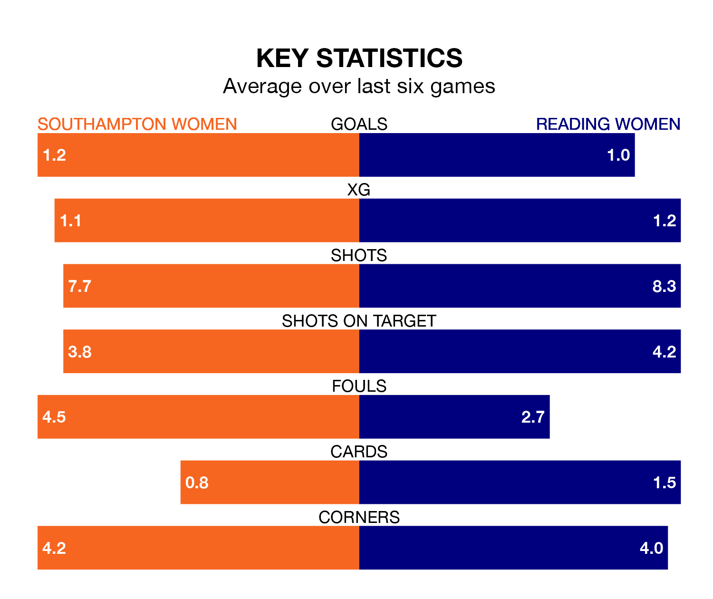

Southampton Women host Reading Women in Sunday's early match at St. Mary's looking to bounce back from defeat last time out in the FA Women's Championship.
The Saints, who sit third in the league after 17 games, fell to a 1-0 away defeat to Sunderland Women on March 3.
They face a Reading side who picked up a win in their last match, a 1-0 victory against Charlton Athletic Women, and who sit ninth in the table.
With 15 goals in 15 games so far this season, Reading are the league's joint-second-lowest scorers with 1.0 goals per game. But they are conceding fewer than average too, letting in 19 goals at a rate of 1.3 per game.
Southampton, meanwhile, are above average scorers, with 1.6 goals per game, compared to a league average of 1.4. They have conceded 1.1 goals per game.
With Emily Orman between the sticks, the Royals can rely on one of the league's safest pair of hands. She has kept six clean sheets in her 14 appearances this season, and only one other 'keeper – Sunderland Women's Claudia Moan – has been able to prevent the opposition scoring on more occasions in the FA Women's Championship.
In the Saints' net, Kayla Rendell has three clean sheets in 15 games.
In the last three years, Southampton and Reading have played each other on three occasions. Southampton won two of them and Reading one.
Their last meeting was on November 8, when Southampton won 1-0 away.
The hosts are in mixed form in the FA Women's Championship, with three wins and three losses from their last six games.
With two wins and three draws over that period, the away team's form is similar – they have both taken nine points from 18.
Updated: 15:10 (UTC), 15/03/24